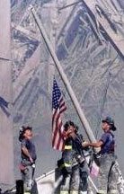

|
Viewpoint
World
Trade Center Tragedy Hits Us All,
Terrorism is a crime against all humanity
by:
Albert Gavino
America is not alone in grieving for loved ones lost in the
terrorist attacks against the World Trade Center September
11. The attacks have personally affected the citizens of many
countries who had friends and family working in the two landmark
towers in New York City.
"Terrorism
is a crime against all humanity,". It knows no ethnic,
religious or other national or geographic boundaries, and
we must see it in that context."An
estimated 50,000 people worked in the World Trade Center.
Built in 1970, it encompassed a cluster of six buildings,
including the twin 110-story towers. The Center housed more
than 430 companies from 28 countries. More than 140,000 people
visited the complex each day.
|
View
Powerpoint Slides
* Best viewed with IE 4 or higher
|
|
|
|
|
|
Most
of the companies were engaged in commercial activities such
as banking and finance, insurance,transportation, imports
and exports. Trade associations, brokerages, and representatives
of foreign governments also had their offices there.
The
magnitude of the World Trade Center tragedy will continue
to unfold as consulates and embassies work to get exact figures
for the number of their nationals that escaped or perished
in the deadliest terrorist attack in history.
|